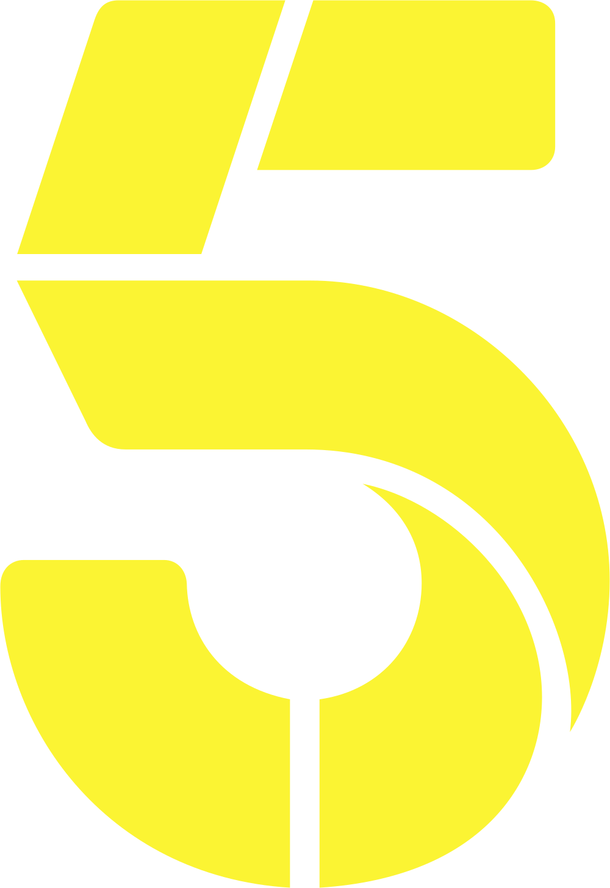
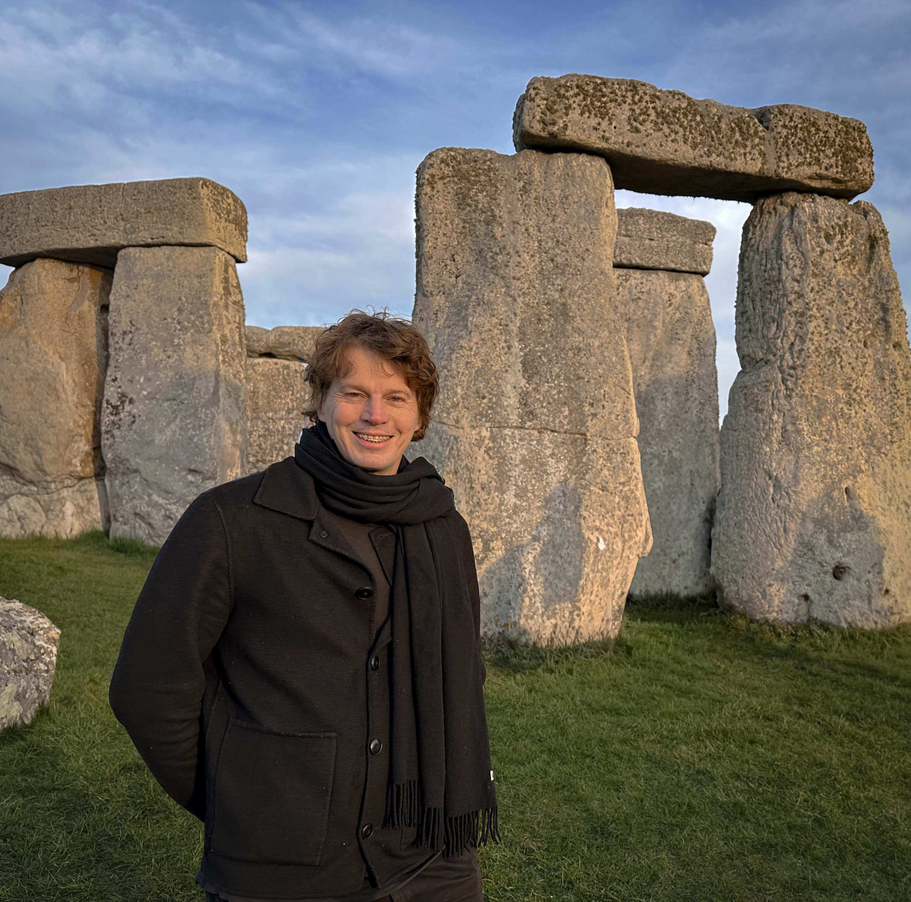

Edward Radford
Documentary & branded-content producer + editor — New York.
Selected work for film, television, and brands.
Selected outlets



About
Edward Radford is an award-winning documentary and branded-content producer + editor based in New York City.
Most recently, his creative for Bloomberg Media Studios was recognized by the Financial Communications Society with its Gold Award for Best Branded Content.
He produced BLACK AS U R (Executive Producer: Billy Porter), Micheal Rice’s kaleidoscopic journey through the fault lines of race, gender and sexuality in America. The film received, among other honours, the inaugural Out in the Silence Award at Frameline 46, the Panavision Award for Outstanding Feature at the 4th Micheaux Film Festival, and the Chevrolet Changemaker Award at the 34th NewFest Film Festival.
His previous feature documentary, Party Boi: Black Diamonds in Ice Castles (Director: Micheal Rice), was honoured with the Programmers’ Award for Best Documentary Feature at the 28th Pan-African Arts & Film Festival, as well as a Mayoral Citation from the City of Baltimore.
Prior to focusing on producing, he was one of London’s first-call editors and a sought-after director of photography. He edited the BBC4 Storyville feature documentaries Black Beach and Mad Dog (Director: Christopher Olgiati). Endgames of a Psychopath (Channel 4, Director: Paddy Wivell), which he both photographed and edited, received a five-star review from The Times.
